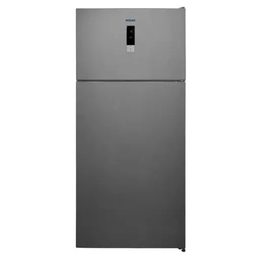

أوشن ثلاجة 2 باب 625 لتر نوفروست لون رمادى غامق OC780TNFDIBA

كاش
47,249 جنيه
السعر محدّث النهاردة · السعر في الفرع هو الأساس
تحليل سريع
أرقام محسوبة من المعروض عندنا
سعره مقارنة بالمقاس ده
رقم 81 من 117 من الأرخص للأغلى
من بين 117 منتج بنفس المقاس عندنا
الضمان
5 سنة
ضمان الوكيل
سعره بين 117 منتج بنفس المقاس عندنا
47,249
الأرخص 6,697الأغلى 146,459
مقارنة بأقرب المنتجات
أقرب ٣ منتجات من نفس النوع والمقاس عندنا
| ده OCEANOC7BOTNFDIBA | KlassOM950VZ40Iافتح › | SmegSF 6381 Xافتح › | SmegPGF 32 Cافتح › | |
|---|---|---|---|---|
| سعر الكاش | 47,249 | 47,528 | 44,999 | 49,994 |
| المقاس () | — | — | — | — |
| الضمان (سنة) | 5 | — | 5 | 5 |
✓ = الأفضل في السطر ده · دوس على اسم أي منتج تشوف صفحته
أسئلة عن المنتج ده
الضمان كام؟5 أعوام ضمان الوكيل · صنع في تركيا
باختصار
اللون: رمادىضمان 5 أعوامبلد الصنع تركيا
البراند: اوشن النوع: ثلاجة نوع التبريد: نوفروست موضع الفريزر: علوي السعة: 625 لتر شاشة ديجيتال: نعم بمبرد مياة: لا تقنية الانفرتر: لا اهم المميزات: - سعة ضخمة 625 لتر تناسب العائلات الكبيرة - نظام نوفروست يمنع تكون الثلج ويحافظ على الطعام طازج - شاشة ديجيتال للتحكم الدقيق في درجات الحرارة - توزيع هواء متعدد للحفاظ على درجة حرارة متوازنة - أرفف زجاجية قوية وسهلة التنظيف - إضاءة LED داخلية موفرة للطاقة الارتفاعxالعرضxالعمق: 186x75x84 سم اللون: رمادي غامق
المواصفات الكاملة
اللون
رمادى
الضمان
5 أعوام
بلد الصنع
تركيا
حنفية
لا
السعة اللترية
625 Liter
ديجتال
لا
نوفروست
نعم
الأسعار شاملة الضريبة · التوصيل والتركيب مجانًا داخل القاهرة
آخر تحديث للأسعار 2026-09-26
آخر تحديث للأسعار 2026-09-26